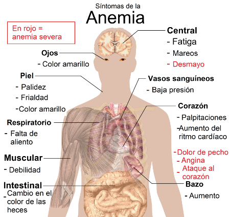
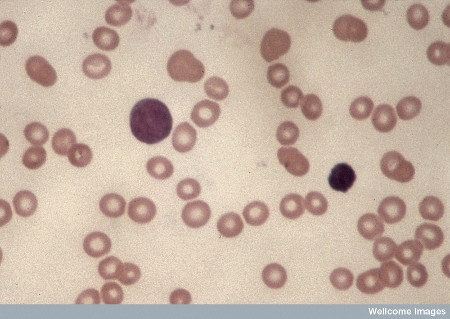
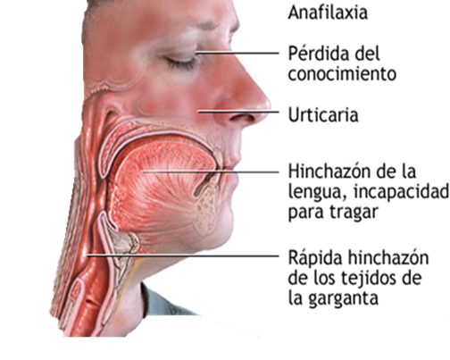

3. Patologías del sistema cardiovascular
Las patologías en el sistema cardiovascular son afecciones que se pueden encontrar en la sangre, en la anatomía o en la fisiología del sistema.
Afecciones sanguíneas.
Muchas enfermedades de la sangre o hemopatías se deben a la incorrecta formación de las células sanguíneas debido a lesiones por sustancias químicas (fármacos, drogas,…) irradiación, defectos hereditarios o cáncer.
Si el fallo de la médula ósea es la causa de una afección de la sangre se puede recurrir a los trasplantes de médula ósea.
- Afecciones de los glóbulos rojos: ANEMIAS.
Son diversos cuadros patológicos que resultan de la incapacidad de la sangre para transportar suficiente oxígeno a las células del organismo. Son consecuencia de un número insuficiente de glóbulos rojos o de un defecto de la hemoglobina.
|  |
|
Síntomas de la anemia Imagen de M. Häggström en Wikimedia Commons bajo Dominio Público |
Algunos tipos de anemias son la aplásica (por destrucción de la médula ósea por sustancias químicas, fármacos o irradiación), la perniciosa (falta de vitamina B12), aguda por pérdida de sangre (debido a hemorragias), ferropénica (insuficiencia de hierro para producir suficiente hemoglobina) o hemolítica (diversos trastornos heredados de la sangre en los que se presentan tipos anormales de hemoglobina como la talasemia).
- Afecciones de los glóbulos blancos.
Encontramos la leucopenia (cantidad anormalmente baja de glóbulos blancos), la leucocitosis (cantidad anormalmente alta de glóbulos blancos) y la leucemia, que es un grupo de enfermedades malignas que se caracteriza por la transformación de las células madre, sustituidas por células normales, lo que da lugar a una leucocitosis con anemia.
|  |
|
Diferenciación celular en un tipo de leucemia Imagen en Wellcome Images bajo licencia CC |
- Trastornos de la coagulación.
Se forman coágulos en los vasos sanguíneos en los órganos que pueden provocar la muerte súbita por interrupción del riego sanguíneo.
Encontramos la trombosis (cuando el coágulo o trombo permanece en el lugar en el que se ha formado), la embolia (cuando una parte del coágulo se desprende y circula por el torrente circulatorio), la hemofilia (trastorno heredado en el que la sangre no coagula) y la trombocitopenia (o disminución del número de plaquetas que se caracteriza por hemorragias en pequeños vasos).
Afecciones en la anatomía del sistema cardiovascular.
Imágenes de la infografía en Wikimedia Commons bajo licencias CC
Alteraciones de la fisiología cardiovascular.
Los trastornos más importantes que se pueden dar en la fisiología del sistema cardiovascular son:
- Hipertensión arterial
La presión arterial elevada aparece cuando la fuerza que ejerce la sangre en los vasos arteriales supera la cifra de 140/90 mmHg. Apenas presenta síntomas y se le conoce como el “asesino silencioso”.
El 90% de los casos se califican como primarios o esenciales, o idiopáticos (sin ninguna causa conocida). Otro tipo, la secundaria, se debe a una enfermedad renal, a problemas hormonales o está producida por los contraconceptivos orales, el embarazo u otras causas.
Los factores de riesgo son hereditarios, raza, edad, sexo masculino, estrés, obesidad, consumo de alcohol, cafeína o tabaco y falta de ejercicio.
El siguiente video trata de la hipertensión y de su tratamiento
Animación Apia _ La hipertensión from Apia on Vimeo.
- Shock circulatorio
Es la incapacidad del sistema cardiovascular para suministrar oxígeno a los tejidos.
Encontramos el cardiogénico (que puede deberse a cualquier tipo de insuficiencia cardíaca), el hipovolémico (como consecuencia del pequeño volumen de sangre en los vasos), el neurogénico (que se produce por un desequilibrio en la estimulación de los músculos de las paredes vasculares), el anafiláctico (como consecuencia de una reacción alérgica aguda llamada anafilaxia) y el séptico ( que se debe a la septicemia, donde agentes infecciosos liberan toxinas en la sangre).
|  |
|
Síntomas de la anafilaxia Imagen de Abraham Zakik en Wikimedia Commonsbajo licencia CC |
Pregunta de Elección Múltiple
Pregunta Verdadero-Falso
Retroalimentación
Verdadero
Retroalimentación
Falso
Tienen más probabilidad de formarse en las venas por estar la sangre sometida a menor presión y circular a menor velocidad.
Retroalimentación
Falso
Es el infarto de miocardio que, tras una oclusión de una arteria coronaria, provoca la muerte celular en los tejidos. La angina de pecho provoca un fuerte dolor torácico por la disminución del oxígeno que le llega al miocardio.